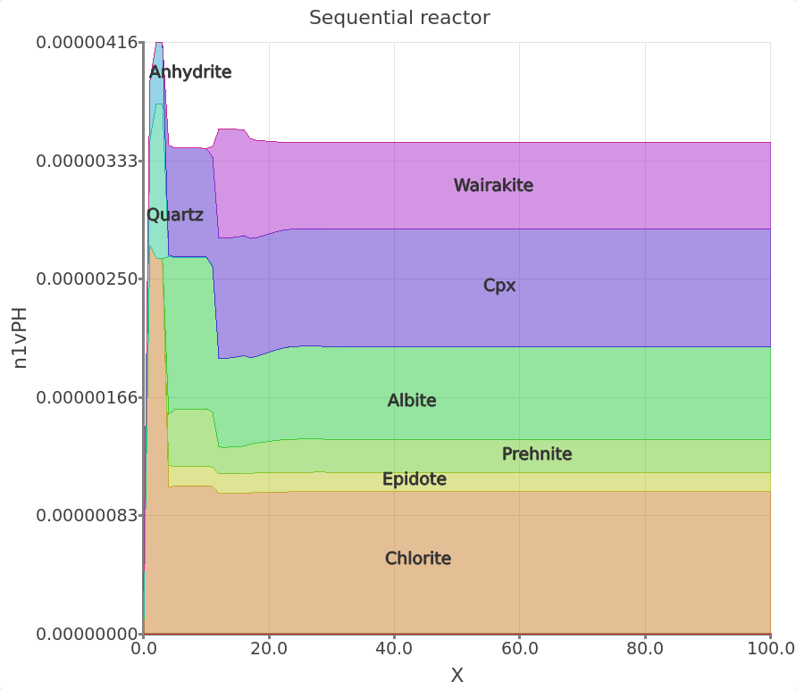

A tutorial for geochemical modeling of fluid-rock interaction using GEM-Selektor and the MINES thermodynamic database
2026-07-06
Prerequisites

GEM-Selektor (GEMS), is a numerical modeling program with a graphical user interface based on Gibbs energy minimization and permits calculating and solving fluid-rock interaction problems of interest in geochemistry.
Installation instructions for GEMS and more information about this modeling program can be found on the GEMS team webpage: http://gems.web.psi.ch/GEMS3/techinfo.html.
Information about the MINES database and project files for the tutorials can be found under https://geoinfo.nmt.edu/mines-tdb
Collaborators: Dmitrii Kulik (Paul Scherrer Institute), Dan Miron (Paul Scherrer Institute), and Nicole Hurtig (New Mexico Tech)